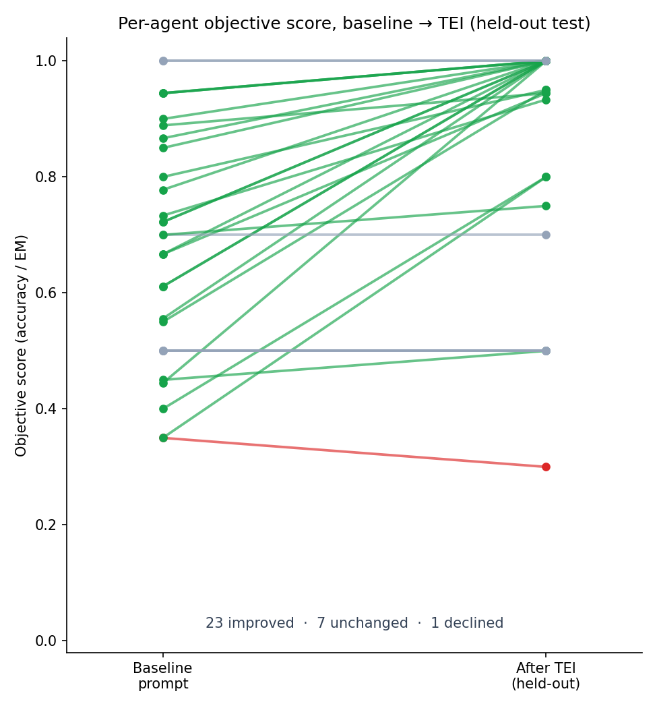
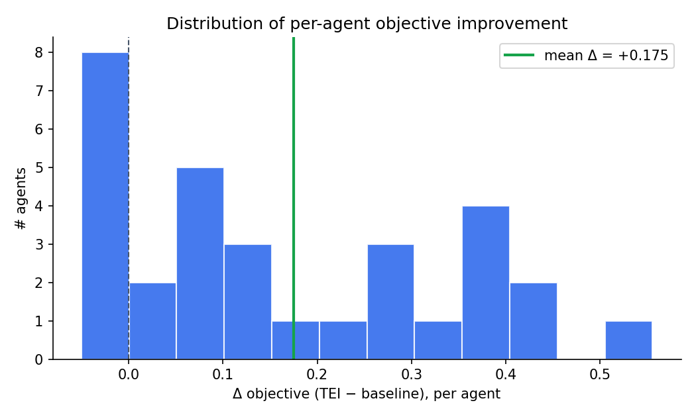
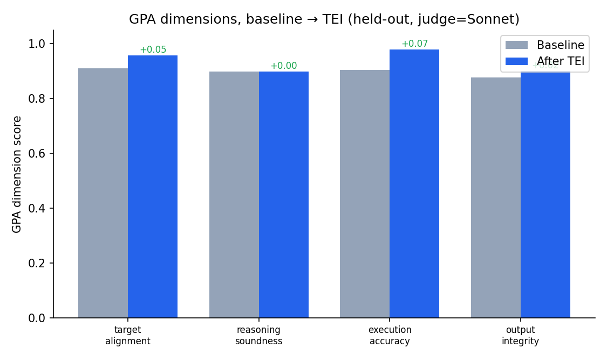
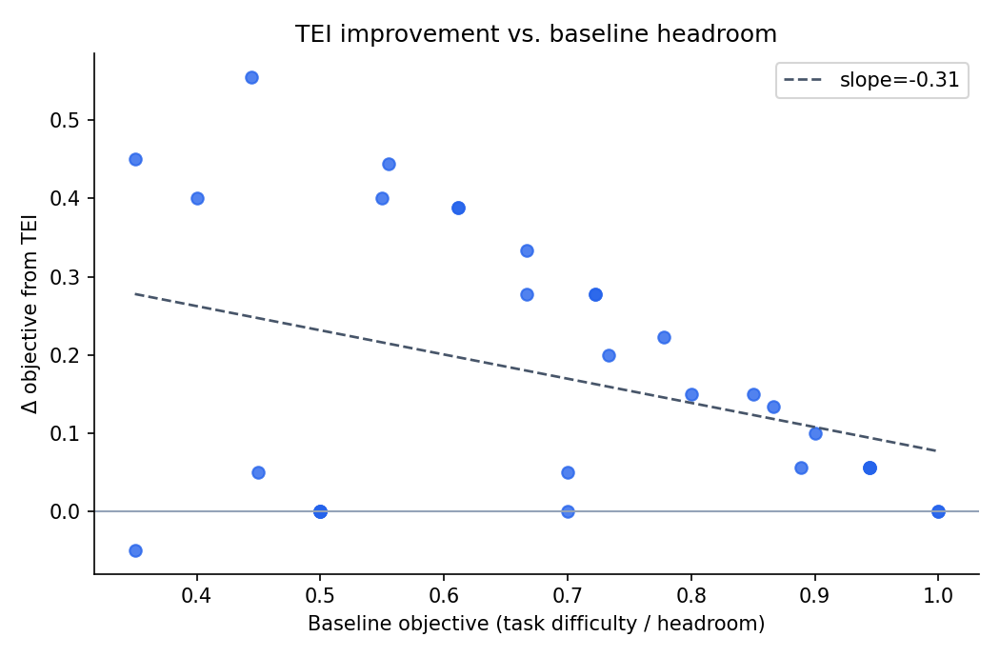

Evaluation-guided, automated prompt optimization promises to improve agentic large-language-model (LLM) systems without manual prompt engineering, yet most supporting evidence is anecdotal: single tasks, in-sample evaluation, and subjective LLM-as-judge metrics scored by a model from the same family as the system under test. We present TEI-Bench, a controlled study of the Target-Evaluate-Improve (TEI) loop — a GPA-style multi-dimensional evaluator coupled to a GEPA-style reflective, Pareto-based prompt optimizer — across 31 agents spanning 31 industries. We adopt three safeguards absent from prior demonstrations: (i) a strict train/test split so all reported scores are on held-out inputs; (ii) an objective primary endpoint (accuracy / exact match) computed in code, with the four GPA dimensions as secondary; and (iii) judge-agent separation, optimizing and judging a weaker model (claude-haiku-4-5) with a stronger, different model (claude-sonnet-4-5). On held-out test data, TEI raises the objective score from 0.682 to 0.857 (mean delta = +0.175, 95% CI [+0.115, +0.237], paired t = 5.60, p = 4.3e-06, Cohen's d_z = 1.01; 23/1/7 win/loss/tie). Improvements concentrate on tasks with measurable headroom and on the dimensions a prompt can control (execution accuracy and target alignment), while reasoning soundness is essentially unchanged. We release all code, the 31 task datasets, every agent output trace, and all optimized prompts.
| Endpoint | Base | TEI | Δ | 95% CI | t | p | d_z |
|---|---|---|---|---|---|---|---|
| Objective (primary) | 0.682 | 0.857 | +0.175 | [+0.115, +0.237] | 5.60 | 4.3e-06 | 1.01 |
| GPA aggregate | 0.898 | 0.934 | +0.036 | [+0.018, +0.058] | 3.44 | 0.002 | 0.62 |
| — target alignment | 0.910 | 0.958 | +0.048 | [+0.027, +0.076] | 3.75 | 7.6e-04 | 0.67 |
| — reasoning soundness | 0.898 | 0.899 | +0.001 | [-0.021, +0.019] | 0.06 | 0.950 | 0.01 |
| — execution accuracy | 0.905 | 0.979 | +0.074 | [+0.044, +0.108] | 4.33 | 1.5e-04 | 0.78 |
| — output integrity | 0.878 | 0.900 | +0.023 | [-0.005, +0.052] | 1.53 | 0.136 | 0.27 |
Win/loss/tie (objective): 23/1/7. Headroom subset (baseline < 0.9, n = 25): Δ = +0.206, p = 6.4e-06, d_z = 1.15.




| Agent | Industry | Base | TEI | Δobj | ΔGPA |
|---|---|---|---|---|---|
| agri_crop_issue | Agriculture / AgriTech | 0.556 | 1.000 | +0.444 | +0.004 |
| community_forum_topic | Online Community | 0.700 | 0.700 | +0.000 | -0.022 |
| consumer_sentiment_5 | Consumer Insights | 0.350 | 0.300 | -0.050 | +0.033 |
| cybersec_alert | Cybersecurity | 0.722 | 1.000 | +0.278 | -0.004 |
| edtech_question_router | EdTech | 0.800 | 0.950 | +0.150 | +0.247 |
| edu_gsm8k | Education | 0.900 | 1.000 | +0.100 | -0.002 |
| edu_math_word | Education | 0.867 | 1.000 | +0.133 | +0.003 |
| energy_meter_event | Energy / Utilities | 0.722 | 1.000 | +0.278 | +0.013 |
| fin_banking_intent | Finance / Banking | 1.000 | 1.000 | +0.000 | +0.029 |
| gaming_support | Gaming | 0.611 | 1.000 | +0.389 | +0.034 |
| gov_service_router | Government / Public Sector | 0.944 | 1.000 | +0.056 | +0.124 |
| health_triage | Healthcare | 0.733 | 0.933 | +0.200 | +0.038 |
| hospitality_review_stars | Hospitality | 0.500 | 0.500 | +0.000 | +0.005 |
| hr_resume_fit | Human Resources | 0.778 | 1.000 | +0.222 | +0.045 |
| insurance_claim_type | Insurance | 0.889 | 0.944 | +0.056 | +0.026 |
| it_email_spam | Corporate IT Security | 0.550 | 0.950 | +0.400 | +0.038 |
| legal_contract_clause | Legal | 1.000 | 1.000 | +0.000 | +0.008 |
| logistics_incident | Logistics / Supply Chain | 0.611 | 1.000 | +0.389 | -0.002 |
| manufacturing_qa | Manufacturing | 0.667 | 1.000 | +0.333 | +0.009 |
| market_research_subjectivity | Market Research | 0.400 | 0.800 | +0.400 | +0.139 |
| media_news_desk | Media / News | 0.850 | 1.000 | +0.150 | +0.064 |
| news_agency_topic | News Agency | 0.700 | 0.750 | +0.050 | +0.029 |
| pharma_ade | Pharmacovigilance | 0.500 | 0.500 | +0.000 | -0.066 |
| platform_toxicity | Online Platform | 0.500 | 0.500 | +0.000 | +0.023 |
| realestate_attribute | Real Estate / PropTech | 0.944 | 1.000 | +0.056 | +0.026 |
| retail_counterfactual | Retail Analytics | 0.500 | 0.500 | +0.000 | +0.009 |
| saas_ticket_priority | B2B SaaS | 0.667 | 0.944 | +0.278 | +0.006 |
| social_emotion | Social Media / CX | 0.450 | 0.500 | +0.050 | +0.100 |
| telecom_churn_reason | Telecom | 0.444 | 1.000 | +0.556 | +0.025 |
| travel_intent | Travel / Hospitality | 0.944 | 1.000 | +0.056 | +0.010 |
| trust_safety_hate | Trust & Safety | 0.350 | 0.800 | +0.450 | +0.137 |